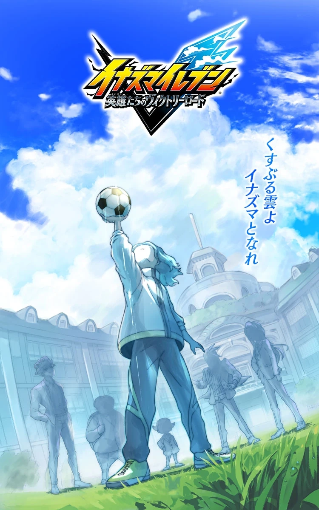
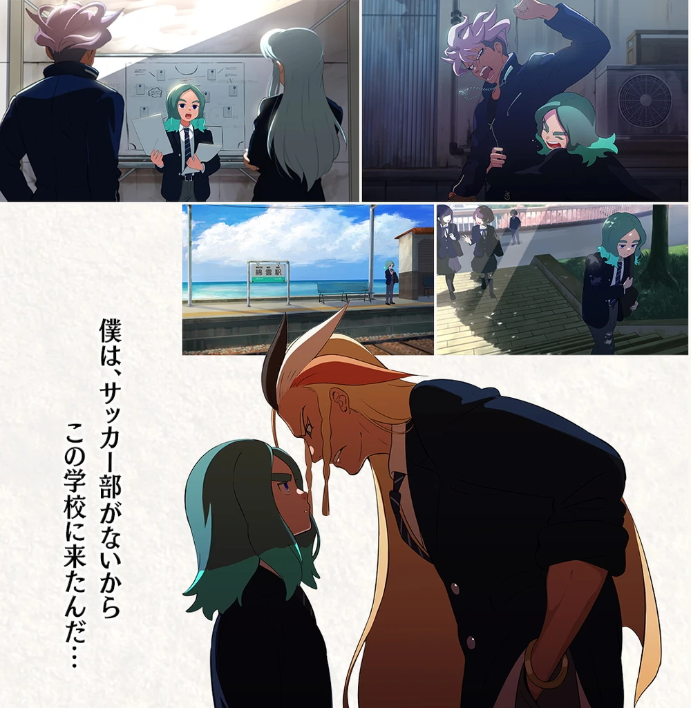
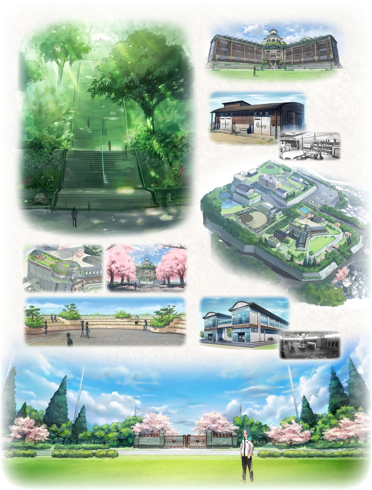
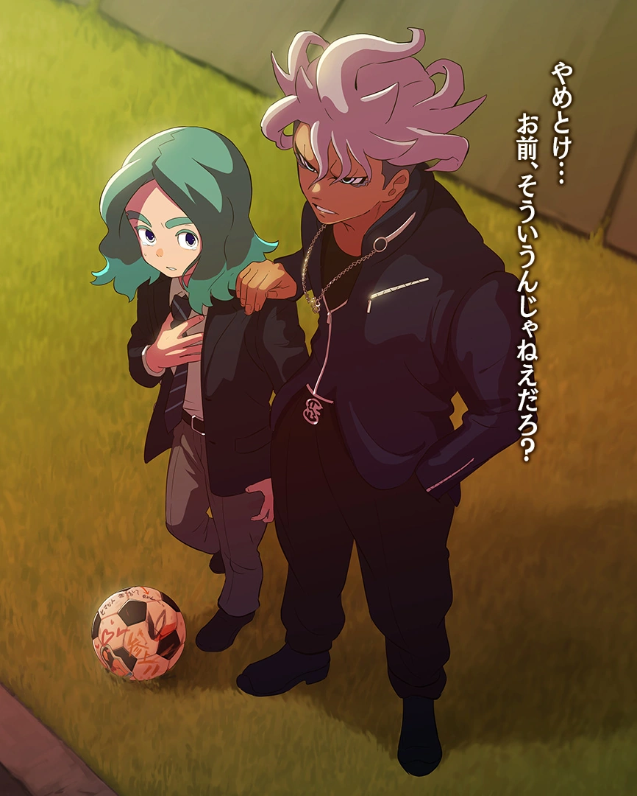
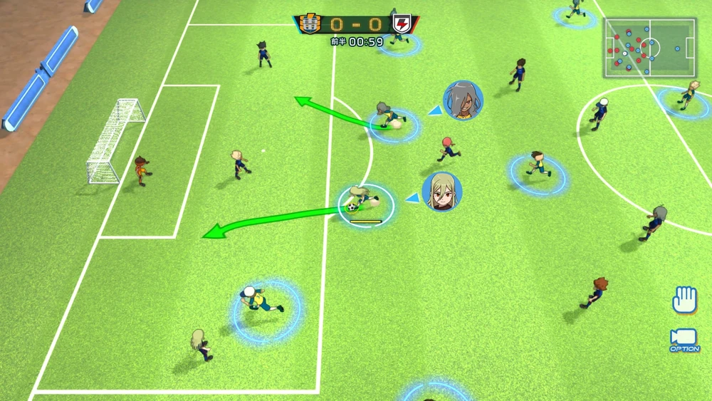
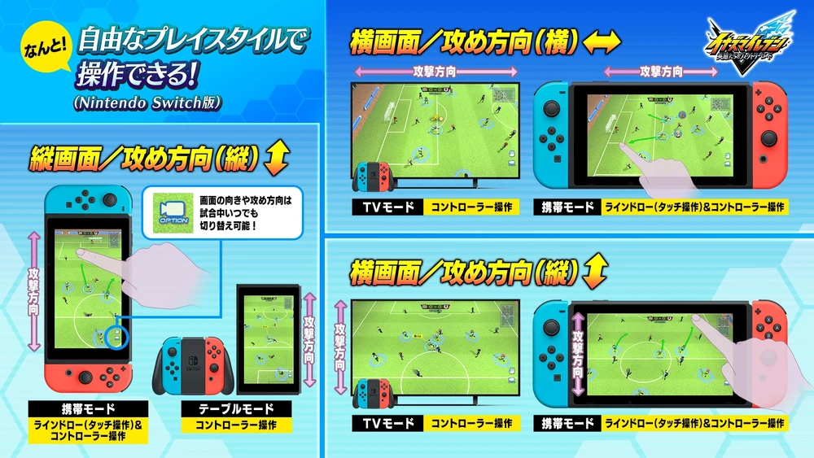

Inazuma Eleven Victory Road
 El día 21 de Julio del 2022, Akihiro Hino hizo una gran actualización en su blog donde informaba que la historia de la Saga de Unmei cambiaría mucho en comparación a su idea inicial.
Ese gran cambio se produciría como una historia y personajes completamente originales, en lugar de un mundo paralelo o estar directamente conectado con alguno de los personajes de las tres sagas anteriores.
La historia de Unmei, ahora se trata de un chico al que por razones desconocidas, no puede jugar al fútbol y que junto a sus compañeros del Instituto Nagumohara, se abre un nuevo camino a la victoria bastante intensa, cuando Umnei decide crear un nuevo club de fútbol, fichando jugadores de su instituto. Esta vez, el proceso de completar el equipo de fútbol ha sido mucho más complejo que en las historias pasadas.
En este juego se está implementando una nueva interfaz llamada; Fútbol Libre, en la que el jugador podrá modificar en cualquier momento la forma de jugar las pachangas y los partidos, ya sea de forma táctil aprovechando las funcionalidades de la Nintendo Switch, como en los juegos principales lanzados para la Nintendo DS y Nintendo 3DS, o a un estilo similar a los juegos de la Saga de Inazuma Eleven Strikers lanzados para la Nintendo Wii y a lo visto en el juego cancelado de Inazuma Eleven Ares.
Habrá un modo a parte llamado Modo Crónica o Serie de Héroes donde se podrán jugar y fichar a los jugadores de las tres sagas anteriores.
Modo historia
 Se dice que el Modo Historia se centra en la historia de Sasanami, un niño que no puede jugar al fútbol y, en cambio, busca a otros jugadores y crea su propio equipo de fútbol con él como entrenador. Él y sus amigos construirán su propio 'camino a la victoria', ya que se dice que los personajes no son tan fuertes como el resto de jugadores, pero enfrentan sus problemas, trabajan y entrenan duro para superarlos y encontrar la manera de ganar. La historia se desarrollará en una nueva escuela, Nagumohara, ubicada en Nagasaki, Kyuushu, que tiene 雲 (lit. Nube) en su nombre para coincidir con la etimología de Sasanami.
 Hino menciona que el proceso para crear un equipo completo de jugadores será mucho más largo que en los juegos anteriores de Inazuma Eleven y que los eventos de Soccer Battle que tienen lugar antes de los partidos reales serán más divertidos y estratégicos para animar el ambiente antes de un partido a gran escala.
Modo Crónica
Se dice que el Modo Crónica es donde el jugador reunirá, luchará y construirá equipos con personajes anteriores de la franquicia Inazuma Eleven, pudiendo incluso enfrentarse a los peores, más fuertes y más temibles equipos enemigos. Se afirma que la cantidad de personajes que pueden unirse y la cantidad de equipos enfrentados aumentará a medida que el jugador complete ciertos logros en el juego y a través de futuras actualizaciones del juego.
Interfaz de fútbol gratis
 Se detalló la dificultad de encontrar un buen esquema de control para el juego Victory Road, ya que Level-5 intentaba lograr los controles de pantalla táctil de los juegos anteriores de la línea principal de Inazuma Eleven sin tocar la pantalla. También hubo un intento de usar los controles tradicionales de los juegos de fútbol, pero eran demasiado estándar y no muy amigables para los principiantes.
Después de muchas pruebas y errores, se decidieron por la interfaz de fútbol libre (フリーサッカーインタフェース, Furī Sakkā Intafēsu), un estilo de juego personalizable que permite al jugador cambiar entre el estilo tradicional de dibujar flechas en sus personajes para moverse o usar un controlador y botones para esas entradas. Hino también discutió la posibilidad de lanzar un lápiz óptico dedicado junto con el juego.
 Las posiciones de la cámara durante los partidos también se pueden cambiar. El uso de una Nintendo Switch desconectado le permite al jugador rotar su pantalla vertical u horizontalmente para ver el campo y jugar el juego. El jugador también puede cambiar la cámara del juego para ver el campo de izquierda a derecha o de arriba a abajo, alternando entre una vista de juego portátil tradicional de Inazuma Eleven o una vista de estilo Strikers. Sin embargo, Hino también afirma que Level-5 está considerando ajustes a este juego personalizable cuando juega contra otro jugador.